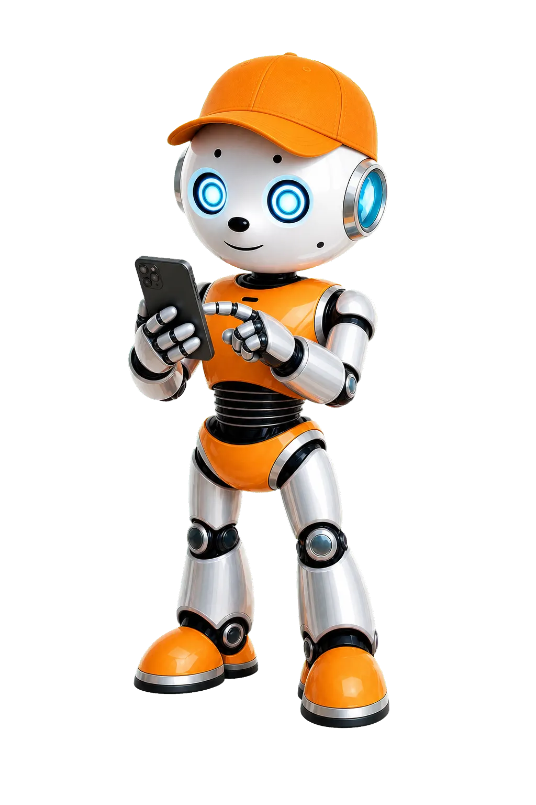

Löysin vanhan aikakoneen. Se vie meidät tulevaisuuteen.
Tuletko mukaan? Matkalla mietit, millainen sinun oma tulevaisuutesi voisi olla.
Näin teet tehtävän: Lue tarina. Tee valintoja. Kirjoita omat ajatuksesi.
Lopuksi voit tallentaa vastaukset ja palauttaa ne opolle.
Aikakone käynnistyy
Robo sanoo:
Paina nappia! Me hypätään vuoteen 2045.
Se on noin 20 vuoden päässä. Sinä olet silloin aikuinen.
Aikakone surisee. Valot vilkkuvat. Sitten kaikki on hetken hiljaa.
Ennen kuin lähdetään, mieti yksi asia:
Pysähdys 1: Tulevaisuuden arki
Robo huudahtaa:
Vau! Katso ympärillesi! Kaikki on muuttunut.
Bussit lentävät. Robotit auttavat kaupassa. Mutta ihmiset näyttävät ihan samalta. 😮
Te kävelette kadulla vuonna 2045. Moni asia on uutta.
Silti ihmiset tekevät tuttuja asioita: he syövät, nauravat ja tapaavat kavereita.
Valitse: Mikä uusi asia tulevaisuudessa kiinnostaa sinua eniten?
Pysähdys 2: Tulevaisuuden työt

Robo selaa puhelinta:
Katso! Täällä on outoja ammatteja.
Avaruusoppaita. Robottien hoitajia. Merilevän viljelijöitä.
Moni näistä töistä ei ollut olemassa, kun sinä synnyit. 📱
Tutkijat sanovat näin: suuri osa tulevaisuuden töistä on vielä keksimättä.
Se kuulostaa pelottavalta. Mutta se on myös hyvä uutinen.
Sinä voit itse keksiä uuden työn.
Valitse: Millaista työtä haluaisit kokeilla tulevaisuudessa?
Hyvä muistaa: Sinun ei tarvitse tietää vielä, mikä sinusta tulee.
Riittää, että kokeilet ja mietit. Se on jo tärkeä taito.
Pysähdys 3: Sinun unelmasi
Robo kysyy:
Nyt sinä olet nähnyt tulevaisuuden.
Mitä sinä haluat siellä tehdä? Kerro minulle yksi unelma.
Unelma ei ole lupaus. Se voi muuttua monta kertaa.
Unelma on vain suunta, jota kohti kuljet.
Matka on valmis 🎉
Robo sanoo:
Hienoa! Sinä mietit omaa tulevaisuuttasi rohkeasti.
Tässä on koonti matkasta. Voit tallentaa sen ja näyttää opolle.
Minulle on nyt tärkeää:
Tulevaisuudessa kiinnostaa:
Haluamani työ ja oma ammatti-idea:
Unelmani:
Hyötyä muille:
Pieni askel jo nyt:
✓ Tiedosto on tallennettu. Muista palauttaa se opolle (esimerkiksi Classroomiin).